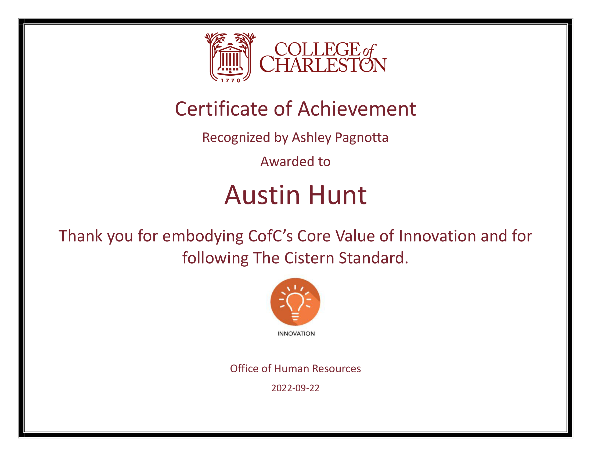

Austin J. Hunt
Vanderbilt University School of Engineering | MS in Computer Science Portfolio
Part Time Student | Entered Program on March 4, 2021 | Graduating December 2022
Principal Source of Financial Support: Full-Time Developer Position at College of Charleston
Academic Advisor: Dr. Dana Zhang
| Courses and Grades | |||
|---|---|---|---|
| Course Number | Course Name | Instructor | Grade |
| 2021 Summer | |||
| CS-5278-50 | Principles of Software Engineering | Yu Sun | A+ |
| CS-6381-50 | Distributed Systems Principles | Aniruddha S Gokhale | A+ |
| 2021 Fall | |||
| CS-5283-50 | Computer Networks | Taylor T Johnson | A+ |
| CS-5287-50 | Principles of Cloud Computing | Aniruddha S Gokhale | A+ |
| 2022 Spring | |||
| CS-5279-50 | Software Engineering Project | Yu Sun | A |
| CS-6315-50 | Automated Verification | Taylor T Johnson | A |
| 2022 Summer | |||
| CS-5262-50 | Foundations of Machine Learning | Charreau Sieanna Bell, Jesse Spencer-Smith | A+ |
| CS-6388-50 | Model-Integrated Computing | Janos Sztipanovits, Tamas Kecskes | A+ |
| 2022 Fall | |||
| CS-6387-50 | Topics in Software Engineering: Security | Sam Hays, Christopher J White | In Progress |
| CS-8395-50 | Special Topics: Quantum Computing | Charles Easttom | In Progress |
Professional Goals & Interests
While I struggle to set specific career goals in stone on a landscape as kaleidoscopic and shifting as computer science, I know independently of that shifting that I want to solve problems and help people — ideally in a creative and collaborative environment.
Having spent a number of years working in network infrastructure with an encouraging team at College of Charleston that was always ready to explain and improve upon how things worked, I do have a special interest in computer networking — especially as it intersects with automation. I remember the thrill of getting to write my first script for automating firmware upgrades of Tripp Lite UPSes, and then later the excitement of learning how to use Ansible to manage bulk configuration changes across a network, and then later the hands-on fun of using that skill to configure a cluster of RHEL Icinga 2 satellite servers for a new network monitoring and alerting system. Watching what amounts to a series of gears click into place and function together to serve a collective purpose is a beautiful thing. That's why I carry a steadfast interest in understanding, designing, and building systems of moving parts, as was probably evident to Dr. Gokhale in my work for his Distributed Systems course, or perhaps to my parents in my childhood obsession with setting up and subsequently toppling mile-long chains of Dominoes, or crafting weird Rube Goldberg machines. I aim to follow this interest in all of my professional pursuits moving forward, with the understanding that distributed systems can manifest in many forms.
Moreover, anyone who has worked with me longer than a month knows I'm an automation fanatic, and that will certainly be a defining factor in my professional trajectory. This enthusiasm was kickstarted when I was an undergraduate at College of Charleston and Dr. Jim Bowring tasked my classmates and I with building our own automated testing frameworks from scratch for existing open source software projects on GitHub. Over the course of this MS program, I got to dive into many automation-centric projects, some collaborative and some individual, that allowed me to really work on and improve my skills as an automator in the context of a deeper toolkit including tools like Ansible, Google Cloud Platform (GCP), Amazon Web Services (AWS), Vagrant by HashiCorp, Apache Kafka, and distributed datastores like Couchbase. Also, a significant part of my day job involves discussing and identifying opportunities for automation with my teammates and implementing solutions with scripting, API development, and other codeless tools like Power Automate, e.g., automating mass data synchronization from on-premise network shares to SharePoint Online site collections, integrating our ITSM software with Cascade CMS to automate provisioning of accounts for new web content managers, using GitHub Actions and Docker to automate the testing and deployment of a series of in-house web applications, and more. I find this kind of work, and more generally the DevOps domain, highly satisfying, and I aim to continuously integrate it, if you will, into my career as a technical professional.
Last but especially not least, my love for full-stack web development is a major gravitational force in my life (pulling me primarily toward port 8000 on localhost, as Django is my favorite framework); the origin of this force was a research project started with Dr. Ayman Hajja at College of Charleston in the fall of 2017. Our project, which we titled PolyPy, was a pedagogical web application specifically focused on Python education; it allowed instructors to use a set of novel templating frameworks to generate many (Poly) quasi-random Python (Py) coding challenges, assign those challenges to their students, and view detailed reports to gain insight into both shared and individual strengths and weaknesses related to both reading and writing Python code. From this project (our work on which is published in the 2019 IEEE Frontiers in Education Conference proceedings), I learned that full-stack web development provided the perfect blend of art and problem solving; it was a colorful concoction of coding and creativity, and I was obsessed. The PolyPy project lasted only for two years but it ultimately ignited my interest in developing for the web — an interest which is still steadily aflame and which will certainly help to illuminate my future career path.
The past year and a half of active engagement in Vanderbilt University's challenge-laden MS program, combined with my full-time, fused IT role spanning networking, DevOps, and full-stack web development, provides me with a unique perspective that I know I can wield confidently moving forward. While I cannot quite concretely picture myself in a specific position, company, or location five years from now, I am searching for opportunities to make positive, real-world impacts in collaborative and creative ways with a motivated team.
Academic Achievements During MS Program
Since starting the MS program in the summer of 2021, I have also held a full-time development job and have maintained a 4.0 GPA while taking two classes each semester. This isn't necessarily the most exciting or sparkling achievement, but nonetheless it is certainly a product of continuous hard work both academically and professionally. I learned early as a high school student that the objective with school is to learn and explore, not to get good grades — good grades tend to be the natural byproduct of excitement and interest, sort of like how wave function collapse in quantum mechanics is the natural byproduct of environmental interaction (I just learned this in Dr. Easttom's Quantum Computing course). I say this to emphasize that my GPA has less to do with an obsession with my record than a real appetite for growing professionally. With this appetite — and a supplemental unwillingness to put my name on things that I'm not proud of, I've made and I continue to make a consistent effort to produce high-quality and often over-the-top work both as a student and as an employee.
Attending remotely with a full-time job, I unfortunately did not participate in any research projects
with faculty, nor in any CS-related campus clubs or activities, but I feel my lack of involvement in
those areas has been counterbalanced by frequent eye-opening deep dives into unfamiliar CS topics like
deep learning, formal verification with symbolic model checking, the design of metamodels with
WebGME
to craft domain-specific modeling languages (DSMLs), and much more. I've spent many a morning,
afternoon, and night reading, writing, and coding as part of this program in pursuit of the idea
conveyed by an admittedly overused Einstein quote:
If you can't explain it simply then you don't understand it well enough.
This program has really pushed me to deconstruct things I do not understand into smaller and smaller
components until I can explain the full idea, and thus has undoubtedly improved my ability to both speak
and write simply about complex technical topics. Classes like Distributed Systems and Principles of
Cloud Computing (both taught by
Dr. Aniruddha Gokhale) posed challenges not only of
designing and building
things like
distributed publish-subscribe systems
and
cloud-based data processing
pipelines, but also of clearly
demonstrating how those systems work. Just a few months ago, a topic like quantum computing
seemed
beyond cognitive reach and more like an abstract science fiction subject, but I have now written a full
five-page paper analyzing a quantum-resistant, lattice-based digital signature scheme called
CRYSTALS-Dilithium
and have
implemented Shor's prime factorization algorithm
with
Qiskit-based quantum programming
as part of Dr. Easttom's Quantum Computing course. Similarly, prior to this program, I didn't have any
experience with machine learning, and certainly could not have explained things like backpropagation,
overfitting, or feature engineering, but as part of CS-5262, I have now worked hands-on with low-level
training, validation and testing of machine learning models for things like employee churn prediction
and image classification in
Google Colab
and have also acquired a bigger-picture grasp on the machine learning workflow and the determination of
a given model's business value (or lack thereof).
Theoretical understanding is certainly critical to growth and success in the computer science domain, and theory has been a major part of this program's curriculum. On that same note, though, learning how to use new tools is also an important part of growth as a developer — one cannot keep up with a shifting landscape without a similarly shifting skillset. Each course that I have taken as a Vanderbilt student has not only introduced me to new tools but has required me to use them in solving equally new kinds of problems. With these applied introductions, I've gotten to work in a practical way with tools like nuXmv for symbolic model checking (which I leveraged for an Icinga 2 case study to tie it into my day job), ZeroMQ for asynchronous message processing (which I used with Guoliang Ding to create distributed publish-subscribe systems), the Spring Framework for building Java-based enterprise applications (which I used to build Cyberbull for simulating stock market investments in a local, risk-free environment), or the lightweight Express web framework for Node.js (which Tucker Hawkinson, Alexandra Falkner and I used as a benchmark to evaluate the performance of our own aptly-named Lickety Split framework).
As part of this program, I have also started writing and publishing computer science articles on platforms like DEV and Medium; it has been my goal for a year or so to start actively engaging with and contributing to the developer community in this form to strengthen my public developer profile. Professor Hays's course on security in software engineering, with its plethora of open-ended homework questions on key cybersecurity topics, has given me the exact push I needed to establish a consistent technical blog, which now contains a series of articles under the umbrella of software and information security, such as A Security Showdown in the Clouds: Comparing the Security Philosophies of GCP and AWS, Breaking Down Modern Trust: Digital Signatures and Their Impact on Business, and Movin' On Up: An Analysis of The Privilege Escalation Vulnerability CVE-2022-26923; each one draws both from my experience as an IT employee in higher education and from material we are covering in CS-6387.
Curriculum Vitae (CV)
Academic Degrees
-
B.S. Computer Science College of Charleston Charleston, SC Aug 2015 - May 2019
As a College of Charleston student, I worked on research with Dr. Ayman Hajja at the lively intersection of pedagogy and web development, I got to present that research on campus to multiple audiences of varying sizes and technical backgrounds, I competed with a fellow CS major in the 2019 Booz Allen Hamilton Hackathon, I competed in the 2019 National Cyber League cybersecurity competition, I developed a strong foundation as a computational thinker through a challenging CS curriculum, and I ultimately graduated summa cum laude with a cumulative GPA of 3.95/4.0 and a major GPA of 3.93/4.0. I also worked part-time as a Student Network Engineer for the College's IT department from the fall of 2017 until graduation.
Professional Employment
-
Digital Communications Developer College of Charleston Charleston, SC Feb 2022 - Present
I am one of a two-member web team (now Digital Communications) for College of Charleston with a broad range of duties spanning: securely configuring and maintaining on-prem and cloud Linux servers (Ubuntu, RHEL); managing Apache and Nginx web server configurations, including SSL cert renewals, VirtualHost modifications, error troubleshooting, etc.; scripting and programming in JS, Python, Bash, and PowerShell; developing, maintaining, documenting, and testing Flask APIs for system integrations as well as Django web apps to meet business needs at a low cost; automating builds and CI/CD processes with Docker/Docker Compose, GitHub Enterprise, GitHub Actions, and Webhooks; collaborating with our network security team and leveraging CLI network analysis tools to troubleshoot and resolve network issues and optimize network security of web projects; containerizing legacy apps to improve manageability and speed up development time; continuing to maintain and scale Icinga 2 for network monitoring and alerting (inherited from previous position); troubleshooting and resolving technical problems of varying complexity for functional users (tickets); using Git heavily for version control of software and web projects; supporting IAM modernization with Azure AD management and scripting against on-prem AD; helping to manage multiple web tools including multiple content management systems, the Twilio platform for SMS messaging, a Microsoft Teams-integrated Live Chat solution, and more; rolling out a new SharePoint Online intranet and assisting departments with migrating away from on-premise infrastructure into the cloud; managing the technical end of a new CRM system for student success management; automating data migrations and synchronizations from on-premise resources to the cloud for functional departments (Python & Powershell)
-
Webmaster College of Charleston Charleston, SC Dec 2019 - Feb 2022
This position included the same responsibilities as above. The new Digital Communications Developer title primarily addressed a discrepancy between the Webmaster position description and pay and actual duties which expanded over time due to increasing campus needs, new projects, and limited IT personnel.
-
Temp Employee (Web Team) College of Charleston Charleston, SC May 2019 - Dec 2019
I was offered this position upon graduating by the same supervisor who hired me for the Student Network Engineer position. Responsibilities included: implementing and scaling a new Icinga 2 environment for network monitoring and alerting; managing a distributed hierarchy of RHEL servers; using Ansible for distributed configuration deployments; working closely with our network infrastructure and network security teams to enable and troubleshoot zoned-based NCPA/SNMP/SSH monitoring traffic across new and legacy infrastructure
-
Student Network Engineer (Part-Time During Undergrad) College of Charleston Charleston, SC Oct 2017 - May 2019
This position introduced me to the world of network infrastructure management. Responsibilities included: using ZTerm to manage access switch software; installing, replacing, and configuring access switches and uninterruptible power supplies (UPSes); working with DHCP configuration for IP address assignment to new infrastructure; configuring UPS network interface cards; automating mass UPS firmware upgrades with Python; managing and organizing inventory (cables, switches, and other assets); helping to train new student network engineers; working in a wide variety of environments across campus to manage physical infrastructure
Achievements, Honors & Awards
-
Context for Cistern Standard Awards: In March of 2022, I worked with our Human Resources department to gather requirements for and set up on their behalf an automated flow (with Power Automate) that would allow College employees to recognize other employees for exhibiting one or more of the institution's Core Values; if approved, an optionally anonymous recognition triggers automated generation of a recognition certificate which gets sent to the person being recognized.
-
Cistern Standard - Recognized for Innovation College of Charleston Charleston, SC Oct 2022
Anonymous said:
Austin is an asset to the College! He should be recognized for our core value of innovation for the way he continuously problem solves with the college's many Cascade CMS users who have varying degrees of comfortability in a system that has many constraints. Cascade requires a lot of creative solutions and Austin is full of them and is super helpful.

-
Cistern Standard - Recognized for Innovation College of Charleston Charleston, SC Sept 2022
Ashley Pagnotta said:
Because of some changes Google made to the pricing of their education offerings, we had to transition from having unlimited Google Drive storage to a fairly small, limited amount. I had a LOT of stuff in my Google Drive, both teaching and research related, and I tried a few different ways to move it over to OneDrive with very little success. After posting about my frustrations on Yammer, Austin jumped in and let me know he (possibly in conjunction with other colleagues?) had built a migration tool that we could use. He got me all set up, and of course my ridiculously large amount of data broke the tool multiple times, but he kept working at it until he was able to get everything migrated from Google Drive to OneDrive. I'm sure it was a huge pain on his end, but I really appreciated it!
 -
Vanderbilt University Tuition Scholarship Vanderbilt University Nashville, TN 2021 - 2022
Vanderbilt University offered a $30K tuition scholarship for those admitted to enroll in the May 2021 cohort of the online MS in computer science program.
-
National Cyber League Individual Game, Rank 192/3607 College of Charleston Charleston, SC Apr 2019
Below is a screenshot of my individual performance report from the 2019 National Cyber League competition, in which I placed 192/3607; this competition covers ethical hacking techniques related to cryptography, steganography, port scanning, network traffic analysis, log analysis, password cracking, and web application exploitation.
-
Best Computer Science Research Poster (Departmental Award) College of Charleston Charleston, SC Apr 2019
-
Outstanding Student Award, CS Department College of Charleston Charleston, SC May 2019
-
Speaker at College of Charleston Research Speaker Series College of Charleston Charleston, SC Jan 2018
-
Linda Robertson Scholarship Linda and Stephen Robertson Charleston, SC 2017 - 2019
-
South Carolina Palmetto Fellows Enhancement South Carolina Commission on Higher Education Charleston, SC 2016 - 2019
-
South Carolina Palmetto Fellows Scholarship South Carolina Commission on Higher Education Charleston, SC 2015 - 2019
-
Computer Science Leading Edge Scholarship College of Charleston CS Department Charleston, SC 2015 - 2019
-
College of Charleston Academic Merit Scholarship College of Charleston Financial Aid Charleston, SC 2015 - 2019
Certifications
-
Docker Certified Associate (DCA) Mirantis Jan 2021
-
Certified Associate in Python Programming (PCAP) OpenEDG Python Institute May 2020
-
Certified Entry Level Python Programmer (PCEP) OpenEDG Python Institute May 2020
Service
-
Construction Volunteer East Cooper Habitat for Humanity Oct 2015 - Apr 2016
-
Fundraising with Portraiture Austin Hunt Portraiture Jun 2020
Started a fundraising campaign in June 2020 to donate 100% of portrait drawing commission payments to Black Lives Matter fundraisers chosen by the commissioners.
Publications
-
A Novel E-Learning Platform for Building and Publishing Student-Driven Personalized Lessons IEEE Frontiers in Education 2020 Uppsala, Sweden (Remote) Oct 2020
-
PolyPy: A Web-Platform for Generating Quasi- Random Python Code and Gaining Insights on Student Learning IEEE Frontiers in Education 2019 Cincinnati, OH Oct 2019
CS Skills & Expertise
-
Development Languages & Libraries
Python Java Bash PowerShell PHP HTML5 JS TS CSS3 Sass Jinja2 EJS Apache Velocity GraphQL YAML Markdown JSON nuXmv React jQuery
-
Operating Systems for Development:
Ubuntu CentOS RHEL Windows MacOS
-
Web
Django Express Spring Node.js Flask React Twilio Apache Web Server Nginx Web Server Heroku Cloudflare DNS Management SSL certificate configuration and renewal
-
DevOps & Infrastructure
Git GitHub GitHub Actions Travis CI Docker Docker Compose Kubernetes SSH & associated security practices Ansible Google Cloud Platform Grafana Icinga 2 Cron Splunk Nagios Cross Platform Agent (NCPA) SNMP WebGME (modeling & metamodeling) AWS IAM AWS Serverless Application Model (SAM) AWS CloudFormation AWS EC2 AWS Cloudwatch AWS Lambda AWS S3 AWS API Gateway Webhooks Linode (IaaS) Azure Active Directory OAuth configuration Microsoft Graph Power Automate
-
Collaboration & Remote Work
SharePoint Online Microsoft Teams Zoom Webex Wrike Basecamp Slack Keybase Azure DevOps TeamDynamix ITSM ServiceNow VPN
Knowledge and Mastery of Computer Science Concepts
A student in the M.Sc. degree program in Computer Science must be able to demonstrate knowledge and mastery of computer science concepts. Add a File Record Audio Record Video Attachments Submit Assignment Files to submit (0) file(s) to submit After uploading, you must click Submit to complete the submission. Comments A student is expected to have the ability to apply computer science concepts in order to solve advanced problems. One artifact is required to demonstrate such ability. The artifact can be a course assignment or project. The statement of the problem should be also included. A student is expected to contribute substantially to significant software artifacts. One such artifact is a required component for the portfolio. Include a copy of one such artifact which may contain design documents, software documentation, and actual code.
Communication Skills in Computer Science
A student in the M.Sc. degree program in Computer Science must be able to communicate computer science concepts in an effective professional manner. One artifact is required to demonstrate the students oral or writing communication skills. The artifact can be a project report or a presentation that was performed for a Computer Science course. If the student has participated in work that resulted in publications or presentations in technical conferences, the corresponding artifacts should be included with an explanation clarifying the students contribution.
Conduct Independent Inquiry in Computer Science
A student in the M.Sc. degree program in Computer Science must demonstrate competence in the conduct of independent inquiry; compilation of a written account of such inquiry, its outcomes, and conclusions. One artifact is required to demonstrate the students competence to conduct independent inquiry in computer science. Such an artifact should document work performed for a project in a Computer Science class, for an independent study class, or for a research project. The artifact must include all components that demonstrate the conduct of the inquiry such as problem statement, design and research methodology, project reports, and software artifacts.